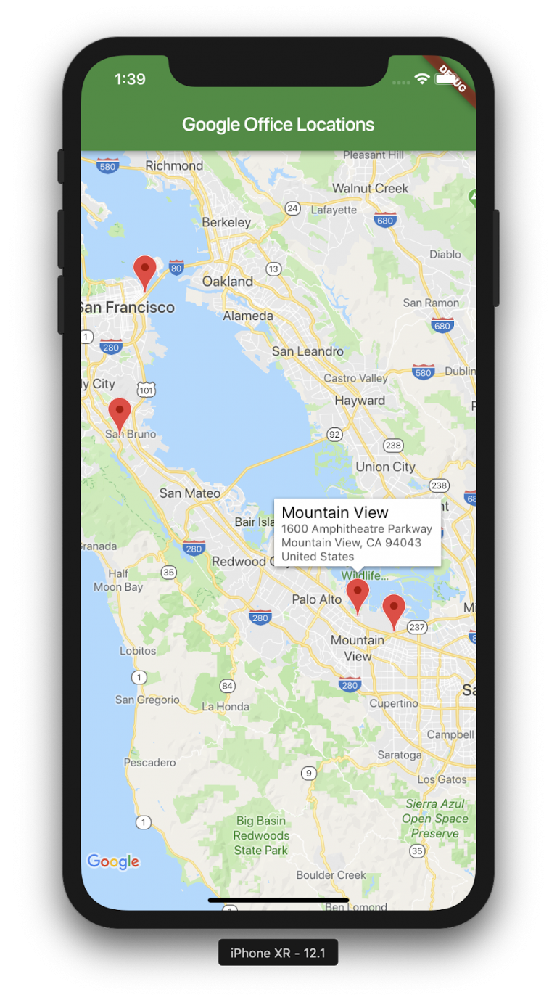
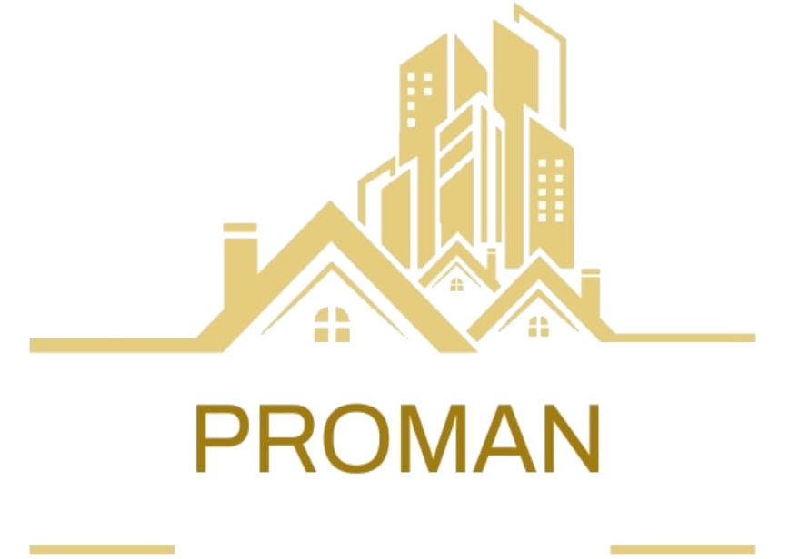

A navigation tool designed to improve driver safety by identifying hijacking hotspots and helping users make safer travel decisions.
→ Available on github
A landlord-focused application for tracking rental income, tenant payments, and overall financial health of properties.
→ Available on github